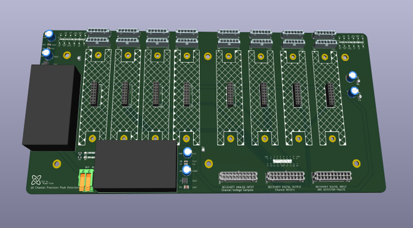

Capture microsecond voltage pulses from an arc flash optical sensor and accurately report peak values to a PLC data acquisition system. The system needed to reliably detect and hold fast transient pulses long enough for a much slower PLC sampling loop to read them, without sacrificing measurement accuracy. This was a solo project completed over two months, from initial circuit concept through final validated hardware.
Each channel receives a 0-4V input pulse from an arc flash optical sensor (photodiode based) representing the intensity of a detected arc event. The core of each channel's circuitry is a peak-detector built around an AD8066 op amp driving a holding capacitor. The op amp charges the capacitor to the peak input voltage and holds that charge for several milliseconds, long enough for the PLC to sample it on its own scan cycle. This was designed and verified in LTspice before PCB production.

Each channel outputs two signals to the PLC:
After sampling, the PLC drives a reset (RST) signal back to the circuit, discharging the holding capacitor and preparing the channel for the next event. The final PCB iteration is a modular "hat" design, with each hat containing two channels worth of circuitry.


Holding an accurate peak from a 5-10 µs pulse stable for several milliseconds proved to be a difficult balance. Early iterations only achieved around 90% accuracy, with most of the error coming from capacitor droop, op amp and diode leakage, and reset timing.

After several redesigns of the peak-detector stage, the final iteration reached <0.5% total measurement error across the full signal path, from optical input to PLC readout. This beat the initial goal of 1% total measurement error.

Most of that gain came from swapping components and designing a cleaner power filter for the op amp, which alone improved accuracy by about 1%. I validated total accuracy by feeding known reference pulses into each channel and comparing the PLC's recorded values against the input, roughly 10 trials per channel.

I also designed the enclosure housing all 16 channels and selected connectors to bring D-sub signals from the arc detector into the enclosure for a clean, industrial-ready package.

The main circuit panel that the hat PCBs clip into includes pi power filtering and a labeled I/O interface for easy field wiring.

The final system met all key requirements: 16 channels, reliable capture of 5-10 µs pulses, and better than 0.5% total measurement error in an industrial environment.